사용 설명서
Create Pack 을 할 일 순서로 풀었어요. 처음이면 1장부터 읽고, 찾는 것이 있으면 차례에서 바로 가요.
그림의 보라 네모칸 번호는 그림 아래 풀이와 짝이에요. 풀이에 마우스를 올리면 그 자리가 밝아져요. 화면 속 게임과 그림은 설명하려고 지어낸 예시예요.
시작하기
내려받고 켜기
- 소개 페이지의 「Windows 용 내려받기」 를 누르면
CreatePack.exe하나가 받아져요. 설치 없이 바로 켜져요. - 서명하지 않은 파일이라 Windows 가 「PC 보호」 창을 띄우면 「추가 정보 → 실행」 을 눌러요.
- exe 옆에 둘 파일은 없어요. 계정과 키는 켠 뒤 오른쪽 위 톱니바퀴 「설정」 에서 넣어요(6장).
- 새 판이 나오면 켤 때 물어요. 「확인」 을 누르면 받아서 스스로 갈아끼워요.
팩이란
팩은 library.json 이 든 폴더 하나예요. 담은 롬 · 그림 · 제목이 모두 이 안에 모여요.
처음 켜면 「팩 열기…」 · 「새 팩 만들기…」 카드가 떠요. 새 팩은 빈 폴더를 고르면 거기에 만들어요.
화면 한눈에
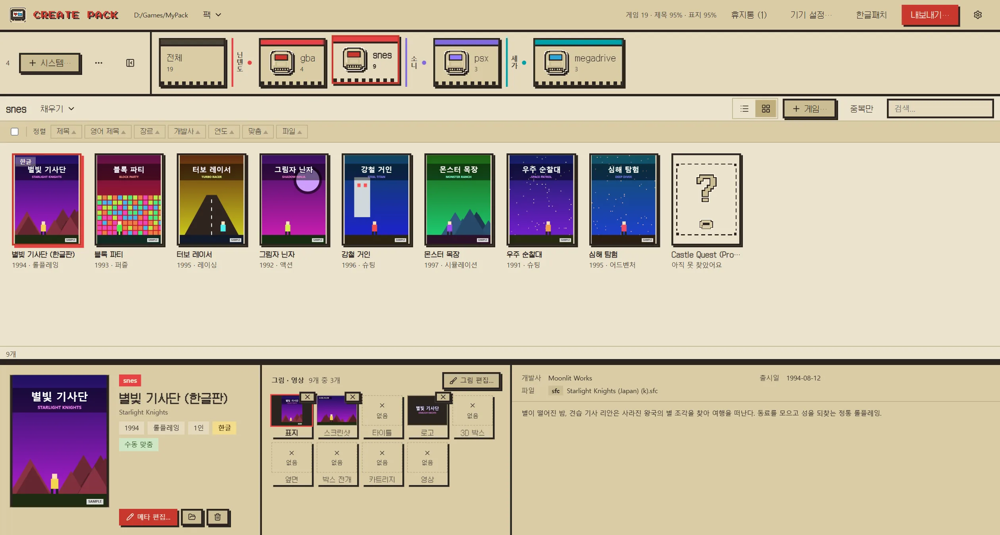
1234- 1머리줄 팩 메뉴 · 휴지통 · 기기 설정 · 한글패치 · 내보내기 · 설정.
- 2기종 선반 팩에 담은 기종이에요. 카드를 누르면 아래 목록이 그 기종 게임으로 바뀌어요.
- 3게임 목록 표로 보거나 표지로 봐요. 누른 게임이 아래 서랍에 떠요.
- 4상세 서랍 고른 게임의 그림 · 정보 · 설명이에요. 메타 편집과 그림 편집을 여기서 열어요.
머리줄의 단추는 이래요.
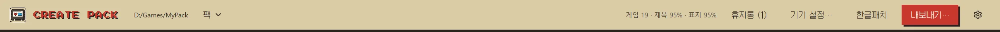
123456- 1팩 ▾ 팩 열기 · 화면 새로고침 · 목록 갱신.
- 2휴지통 지운 게임이 있을 때만 보여요.
- 3기기 설정… 안드로이드 기기의 설정 폴더를 팩에 저장하고 다른 기기에 넣어요.
- 4한글패치 한글패치 목록 · 받기 · 패치 적용.
- 5내보내기… 프론트엔드가 읽을 목록을 만들고 롬 · 그림을 보내요.
- 6설정 계정 · AI 키 · 테마 · 업데이트.
- 「팩 ▾」 의 「목록 갱신」 은
roms/를 훑어 새 롬은 더하고 없어진 롬은 빼요. 「화면 새로고침」 은 복사가 도는 동안 늘어난 것을 화면에 반영만 해요. - 머리줄의 「게임 N · 제목 % · 표지 %」 는 제목과 표지를 가진 게임이 얼마나 되는지 보여 줘요.
- 구분선(선반 아래 · 서랍 위 · 서랍 안 칸 사이)은 끌어서 크기를 바꾸고, 두 번 누르면 원래대로 돌아가요.
게임 담기
롬 폴더를 기종째 담거나, 담아 둔 기종에 몇 개씩 넣어요. 팩 밖의 원본은 건드리지 않고 복사해 와요.
기종째 담기
선반 왼쪽 위 「+ 시스템…」 을 눌러요.
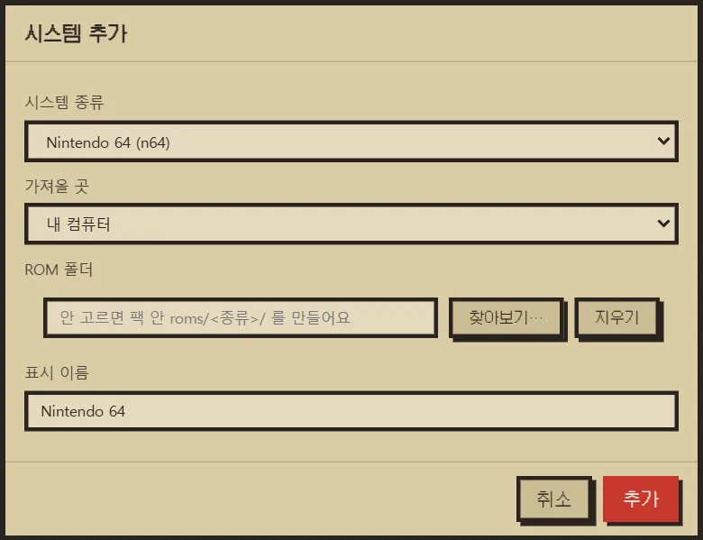
1234- 1시스템 종류 담을 기종이에요. 폴더 이름과 달라도 돼요.
- 2가져올 곳 내 컴퓨터 · 안드로이드(USB) · 커스텀 리눅스(SFTP).
- 3ROM 폴더 팩 밖 폴더면 팩 안 roms/<종류>/ 로 복사해요(원본은 그대로).
- 4추가
- ROM 폴더를 비워 두면 팩 안에 빈
roms/<종류>/를 만들어요. 나중에 「+ 게임…」 으로 채워요. - 고른 폴더에
gamelist.xml이나metadata.pegasus.txt가 있으면 항목 체크(제목 · 설명 · 장르 · 그림 · 영상 …)가 떠요. 체크한 항목은 그 파일의 값으로 채워요. - 안드로이드(USB) · 커스텀 리눅스(SFTP) 기기에서 가져오면 먼저 PC 로 복사한 뒤 담아요.
몇 개만 넣기
기종을 고른 채 목록 머리의 「+ 게임…」 을 눌러요.
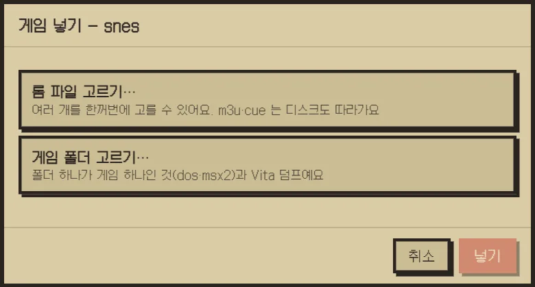
123- 1롬 파일 고르기… 여러 개를 한꺼번에. m3u · cue 는 딸린 디스크도 같이 가요.
- 2게임 폴더 고르기… 폴더 하나가 게임 하나인 것(dos · msx2)과 Vita 덤프.
- 3넣기 무엇이 갈지 먼저 보여 준 뒤 복사해요.
무엇이 몇 개, 얼마만큼 갈지 먼저 보여 주고, 「넣기」 를 누르면 따로 뜬 진행 창에서 복사해요. 못 찾은 딸린 파일(cue 가 가리키는 bin 등)이 있으면 경고해요.
폴더 다시 읽기
탐색기에서 롬 폴더를 직접 고쳤으면 앱에 다시 읽혀요. 선반의 기종 카드에 마우스를 올리면 나오는 ↻ 를 누르거나, 「⋯」 메뉴의 「여러 시스템 롬 폴더 다시 읽기」 로 여럿을 한꺼번에 해요.
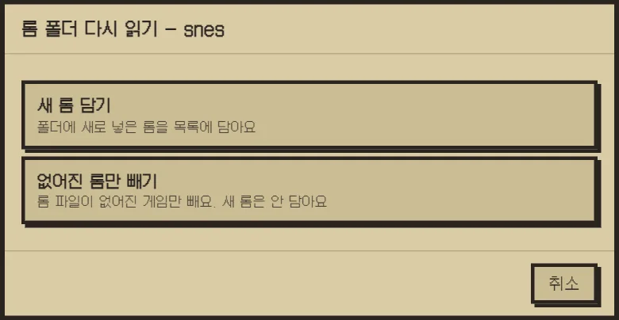
12- 1새 롬 담기 폴더에 새로 넣은 롬을 목록에 담아요.
- 2없어진 롬만 빼기 폴더에서 지운 롬을 목록에서 빼요.
목록 다루기
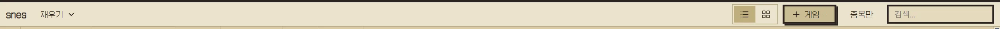
12345- 1채우기 ▾ 일괄 스크래핑 · AI로 채우기. 기종을 하나 골랐을 때만 눌려요.
- 2보기 표로 보기 · 표지로 보기.
- 3+ 게임… 내 컴퓨터의 롬을 이 기종에 넣어요.
- 4중복만 같은 게임이 여러 파일(지역판 · 한글판)로 든 것만 묶어 봐요.
- 5검색 파일 이름 · 제목으로 걸러요.
- 표 보기에서는 열 머리를 눌러 정렬해요. 표지 보기에서는 표지 위 「한글」 띠가 파일 이름에
(k)가 든 한글패치판이에요. - 검색은 기종을 안 골라도 검색어가 있으면 모든 기종에서 찾아요.
- 게임을 체크하면 목록 아래에 선택 줄이 나와요.
- 「선택 압축」: 기종에 맞는 꼴(rvz · chd · zip)로 압축해요. 옛 파일은 팩 휴지통으로 가요.
- 「휴지통으로」(Delete 키): 고른 게임을 팩 휴지통으로 옮겨요.
- 「선택 합치기」: 여러 장 디스크를
m3u한 줄로 합쳐요. 되돌리는 기능이 없어요.
- 기종을 목록에서 빼려면 선반 카드에 마우스를 올려 ✕ 를 눌러요. 롬 파일은 그대로고, 다시 담으면 적어 둔 제목 · 설명이 돌아와요.
휴지통
지운 게임은 팩 안 _trash/ 로 가요. 머리줄 「휴지통 (N)」 은 지운 게임이 있을 때만 보여요.
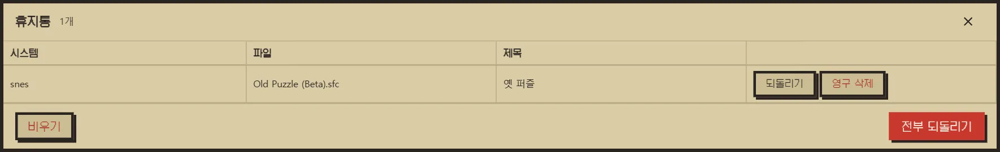
123- 1되돌리기 · 영구 삭제 한 줄씩. 영구 삭제는 두 번 눌러야 해요.
- 2전부 되돌리기 제목 · 설명도 같이 돌아와요.
- 3비우기 통째로 지워요. 되돌릴 수 없어요.
되돌리면 롬 · 그림 · 제목 · 설명이 함께 돌아와요. 같은 이름의 롬이 팩에 이미 있으면 그 게임은 되돌리지 않아요.
제목·그림 채우기
한 게임씩 고르고 고치거나, 기종째 한꺼번에 찾아 넣어요. 인터넷 자료는 ScreenScraper(무료 계정)와 libretro(계정 없음)에서 찾아요.
상세 서랍
목록에서 게임을 하나 누르면 아래 서랍에 떠요.
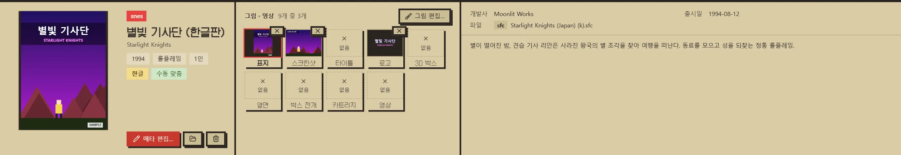
12345- 1메타 편집… 제목 · 설명 · 그림을 찾아 바꾸는 창이에요.
- 2폴더 · 휴지통 탐색기에서 롬 보기 · 이 게임을 팩 휴지통으로(Delete 키).
- 3그림 · 영상 칸 아홉 종류가 늘 같은 자리에 있어요. 없는 것은 「없음」, ✕ 는 두 번 눌러 떼요.
- 4그림 편집… 고른 그림을 자르고 투명하게 하고 새로 가져와요.
- 5정보 · 설명 개발사 · 출시일 · 파일 · 설명이에요.
- 그림 칸 아홉(표지 · 스크린샷 · 타이틀 · 로고 · 3D 박스 · 옆면 · 박스 전개 · 카트리지 · 영상)은 늘 같은 자리에 있어요. 칸 왼쪽 아래에 그림의 지역이 적혀요.
- 칸을 고르고 「그림 편집…」(영상 칸이면 「영상 편집…」)으로 손봐요. 서랍에서 바꾼 그림 · 영상은 바로 팩에 저장돼요.
한 게임씩 고치기 — 메타 편집
서랍의 「메타 편집…」 을 눌러요.
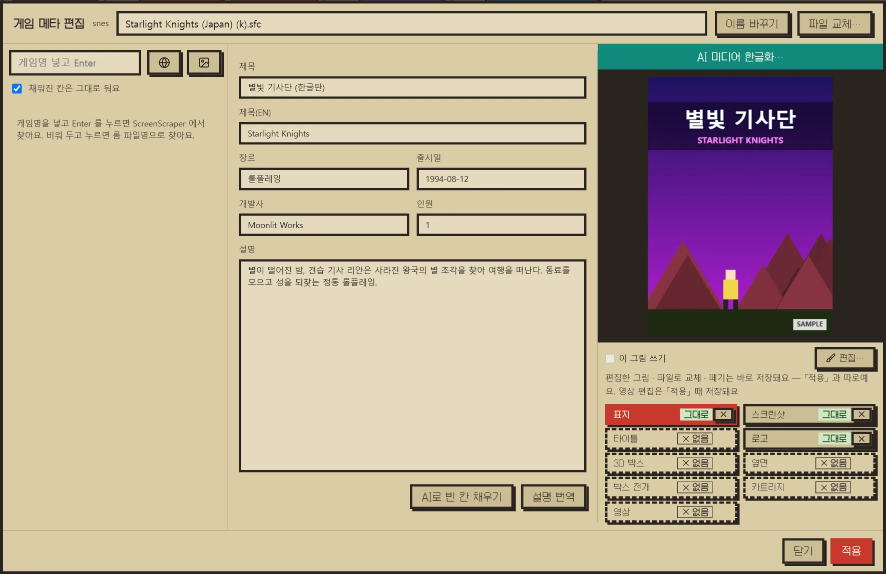
12345- 1찾기 게임명 넣고 Enter = ScreenScraper · 그림 단추 = libretro 썸네일(계정 없이).
- 2값 칸 후보를 고르면 채워져요. 손으로 고쳐도 돼요.
- 3AI 단추 빈 칸 채우기 · 설명 번역(본인 AI 키).
- 4그림 목록 종류마다 「새 그림」 · 「그대로」 · 「없음」 이 보여요.
- 5적용 누르기 전에는 글이 저장되지 않아요.
- 찾기검색 칸에 게임 이름을 넣고 Enter 를 누르면 ScreenScraper 에서 찾아요. 비워 두면 롬 파일 이름으로 찾아요. 그림 단추는 libretro 썸네일에서 그림만 가져와요.
- 후보 고르기후보를 누르면 값 칸과 그림 목록이 채워져요. 「채워진 칸은 그대로 둬요」 를 켜 두면 빈 칸만 채워요. 칸마다 붙은 체크로 따로 켜고 끌 수도 있어요.
- 다듬기칸은 손으로 고쳐도 돼요. 「AI로 빈 칸 채우기」 는 영어 제목 · 장르 · 출시일 · 개발사 · 인원 중 빈 칸을, 「설명 번역」 은 설명을 한국어로 옮겨요.
- 적용「적용」 을 눌러야 글과 후보 그림이 저장돼요. 적용하지 않고 닫으면 저장할지 물어요.
- 그림 목록에는 종류마다 상태가 붙어요 — 「새 그림」(적용 때 들어감) · 「그대로」(팩에 있는 것) · 「없음」 · 「파일 없음」(목록에는 있는데 파일이 없음).
- 찾은 제목을 우리 표기로 맞추지 못하면 「제목 표기 확인」 창이 떠서 「AI 추천」 · 「원래대로 두기」 · 「이대로 쓰기」 중에 골라요.
- 머리의 「이름 바꾸기」 는 롬 파일 이름을 바꾸고 그림 이름도 따라 바꿔요. 「파일 교체…」 는 롬을 다른 파일(예: 한글패치본)로 갈아끼워요. 제목 · 설명은 그대로고, 옛 롬은 팩 휴지통으로 가요.
그림 손보기 — 그림 편집
서랍이나 메타 편집 창에서 그림 칸을 고르고 「그림 편집…」 · 「편집…」 을 눌러요.
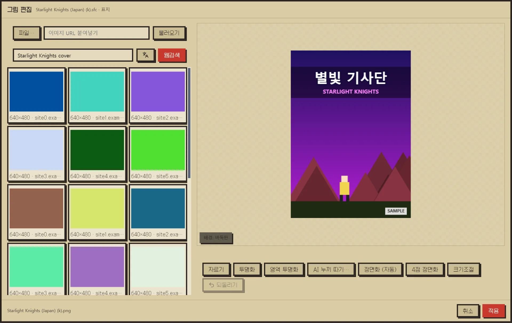
12345- 1파일 · 주소 내 그림 파일이나 이미지 주소로 가져와요.
- 2웹검색 구글 이미지 결과를 누르면 그 그림을 가져와요. 한글 제목이 있으면 옆 단추로 한글 · 영어 제목을 바꿔 찾아요.
- 3작업판 휠로 확대 · 축소. 「배경」 으로 투명한 자리를 봐요.
- 4손보기 자르기 · 투명화 · AI 누끼 따기 · 정면화 · 크기조절 · 되돌리기.
- 5적용 PNG 로 팩에 저장해요.
- 「웹검색」 을 누르면 구글 이미지 결과가 칸으로 떠요. 칸을 누르면 그 그림을 가져와요(원본을 못 받으면 구글의 작은 그림). 로고를 찾을 때는 투명 배경 그림만 찾아요.
- 한글 제목이 있는 게임은 검색 칸 옆 단추로 한글 제목 · 영어 제목 검색어를 바꿔 찾아요.
- 박스 전개 칸에서는 「앞표지 + 옆면으로 만들기」 로 [뒷표지(녹색) · 옆면 · 앞표지] 전개도를 바로 만들어요. 옆면 그림이 없으면 「옆면」 칸에 먼저 넣어요.
- 「투명화」 는 네 모서리에서 이어진 배경만 지우고, 「영역 투명화」 는 누른 색이나 끈 사각형 안을 지워요.
- 「정면화」 는 비스듬히 찍은 박스 사진을 똑바로 펴요. 「4점 정면화」 로 네 귀퉁이를 직접 찍을 수도 있어요.
- 「AI 누끼 따기…」 는 그림 AI 에게 배경을 지워 달라고 보내요. 1~2분 걸리고 본인 키로 요금이 나가요. 쓸 서비스와 모델은 「설정 › AI 미디어 한글화 · 편집」 에서 골라요. 결과는 「되돌리기」 로 무를 수 있어요.
기종째 스크래핑 — 일괄 스크래핑
선반에서 기종을 하나 고르고 목록 머리 「채우기 ▾ › 일괄 스크래핑…」 을 눌러요. 「전체」 를 보는 동안에는 잠겨 있어요.
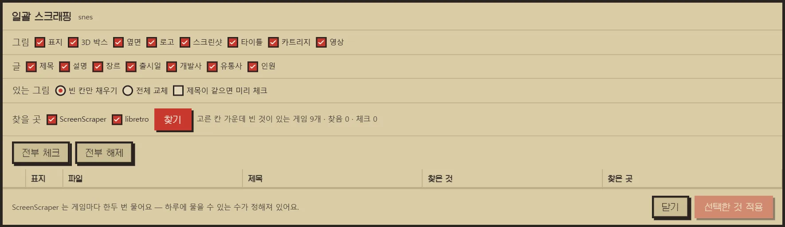
1234- 1찾을 칸 그림 8가지 · 글 7가지. 고른 칸이 하나라도 빈 게임만 목록에 들어요.
- 2있는 그림 빈 칸만 채우기 · 전체 교체(옛 그림은 팩 휴지통으로).
- 3찾기 ScreenScraper · libretro 에 물어요. 찾은 것은 표에 근거와 함께 떠요.
- 4선택한 것 적용 체크한 줄만 넣어요.
- 찾을 칸 고르기채우고 싶은 그림 · 글 칸만 체크해요. 고른 칸이 하나라도 빈 게임만 목록에 들어요. 영상은 파일이 커서 오래 걸려요.
- 있는 그림「빈 칸만 채우기」 는 이미 넣은 그림(한글화한 표지 등)을 그대로 둬요. 「전체 교체」 는 고른 그림 칸을 모두 새로 받고, 옛 그림은 팩 휴지통으로 보내요. 글은 어느 쪽이든 빈 칸만 채워요.
- 찾기찾을 곳(ScreenScraper · libretro)을 고르고 「찾기」 를 눌러요. 진행 창에서 몇 개째인지 보이고 「멈추기」 로 멈출 수 있어요.
- 보고 체크하기표의 「찾은 곳」 에 무엇으로 맞췄는지 적혀요. 확실한 것은 미리 체크돼 있어요. 나머지는 표지와 이름을 보고 직접 체크해요.
- 적용「선택한 것 적용」 을 누르면 체크한 줄만 받아 넣어요.
스크래핑이 무엇으로 맞추나요
- 찾는 순서
- ScreenScraper 에 롬(내용 CRC · 크기 · 파일 이름)으로 먼저 묻고, 채울 것을 못 찾으면 게임의 영어 제목으로 검색해요. libretro 는 롬 파일 이름 → 영어 제목 순으로 표지 · 타이틀 · 스크린샷만 찾아요.
- 미리 체크
- 「롬 해시가 같음」 · 「파일 이름 그대로」 로 맞춘 줄만 미리 체크돼요. 「서버가 이름으로 맞춤」 과 영어 제목 검색으로 찾은 줄은 옆 게임(1편↔2편, 일본판↔한국판)일 수 있어 직접 봐요. 한글패치한 롬은 해시가 달라서 보통 이쪽으로 와요.
- 제목이 같으면
- 「제목이 같으면 미리 체크」 를 켜면 찾은 이름이 지금 제목과 글자 그대로 같은 줄도 미리 체크해요. 기본은 꺼져 있어요.
- 영어 제목
- 롬으로 못 찾은 게임은 영어 제목이 없으면 ScreenScraper 검색을 건너뛰어요. 「AI로 채우기」 나 메타 편집에서 영어 제목을 먼저 채워 두면 더 많이 찾아요.
- 설명 언어
- 한국어 설명이 없으면 영어로 와요. 메타 편집의 「설명 번역」 으로 옮겨요.
- 하루 조회 수
- ScreenScraper 는 계정마다 하루에 물을 수 있는 수가 정해져 있고, 게임마다 한두 번 물어요. 남은 수는 「설정 › ScreenScraper」 의 「계정 확인」 으로 봐요.
AI로 채우기
「채우기 ▾ › AI로 채우기…」 는 고른 기종 게임들의 빈 칸을 AI 에게 한꺼번에 물어요.
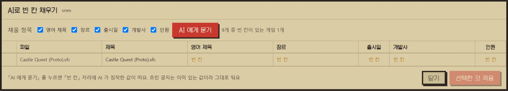
123- 1채울 항목 빈 칸만 물어요. 채워진 칸은 안 건드려요.
- 2AI 에게 묻기 답이 「빈 칸」 자리에 떠요.
- 3선택한 것 적용
- 답은 빈 칸 자리에 밝게 뜨고, 이미 있는 값은 흐린 글자로 그대로 둬요. 새 값을 받은 줄은 저절로 체크돼요.
- 중간에 끊겨도 받은 것까지는 남아요. 다시 누르면 남은 게임만 물어요.
- 쓸 AI(Gemini · ChatGPT · Claude)는 「설정 › AI 글 채우기 · 번역」 에서 골라요. 요금은 본인 키로 그 서비스에 나가요.
그림 속 글자 한글화
메타 편집 창 오른쪽 위 「AI 미디어 한글화…」 는 표지 · 로고 · 타이틀 같은 그림 속 글자를 한글 제목으로 다시 그려요.
- 한글 제목 넣기그림에 넣을 제목을 적고, 필요하면 「추가 지시」 를 더해요.
- 그림 고르기바꿀 그림 카드를 체크하고 비용 확인 체크를 켠 뒤 「선택 일괄 변환」 을 눌러요. 로고를 먼저 그리고, 표지 · 카트리지 같은 그림은 그 로고를 본보기로 같이 보내요.
- 견주기결과 카드를 크게 열어 원본과 나란히 봐요. 실패한 것만 다시 할 수 있어요.
- 적용쓸 결과를 고르고 「선택한 결과 일괄 적용…」 을 눌러요.
영상 넣기
서랍이나 메타 편집 창의 영상 칸에서 「영상 편집…」 을 눌러요.
- 창을 열면 게임 제목으로 유튜브를 바로 찾아요. 결과를 누르면 받아 오고, 영상 주소나 내 파일(mp4 · mkv · webm · mov)을 넣어도 돼요. 한글 제목이 있으면 검색 칸 옆 단추로 한글 · 영어 제목을 바꿔 찾아요.
- 영상을 틀며 손잡이 둘로 쓸 구간을 잡고 「선택 구간 적용」, 통째로 쓰려면 「전체 사용」 을 눌러요.
- 처음 쓸 때 영상 도구(yt-dlp · ffmpeg)를 한 번 받아요.
- 서랍에서 열었으면 바로 저장되고, 메타 편집 창에서 열었으면 그 창의 「적용」 때 저장돼요.
한글패치
레트로디비(retrodb.info) 한글패치 목록을 보고, 배포처에서 직접 받은 패치를 원본 롬에 걸어 한글판을 만들어요. 앱이 패치를 대신 받아 주지는 않아요 — 받는 것은 브라우저고, 앱은 받은 파일을 정리하고 걸어요.
한글패치 창
머리줄 「한글패치」 를 눌러요. 팩을 안 열어도 돼요. 받은 파일은 KRPATCH/기종/게임/ 에 모아요.
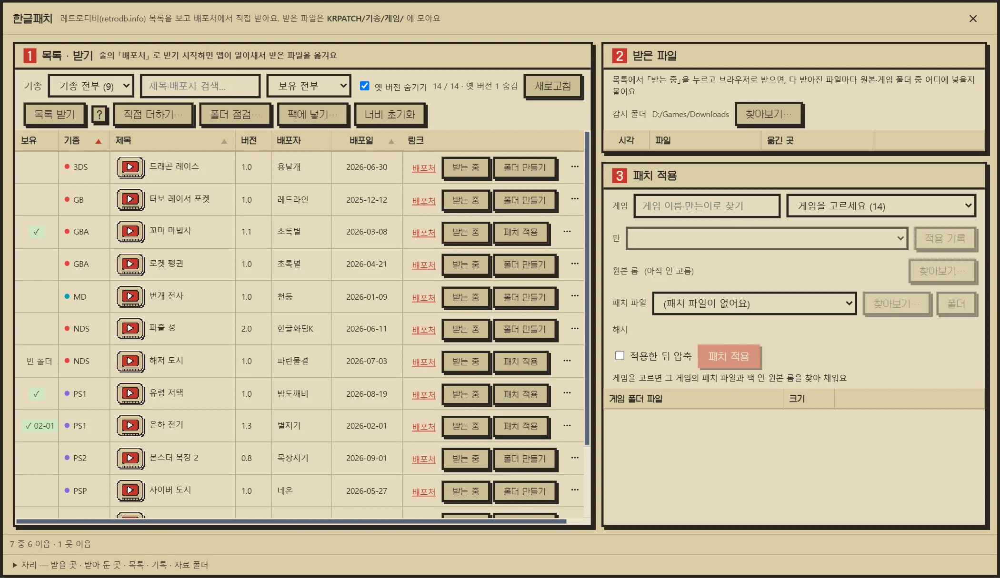
1234- 1탭 목록 · 받은 파일(다 받아진 파일을 게임 폴더로 옮겨요) · 패치 적용(원본 롬에 패치를 걸어요). 고른 탭이 창을 다 써요.
- 2찾기 · 목록 기종 · 검색 · 보유로 걸러요. 「목록 받기」 는 본인 키로 목록을 받아요.
- 3줄 단추 배포처 · 받는 중 · 패치 적용(또는 폴더 만들기) · ⋯
- 4자리 받을 곳 · 받아 둔 곳 · 목록 · 기록 파일.
- 「보유」 칸은 받아 둔 폴더와 기록으로 정해요 — ✓ 날짜(가짐) · 옛 판 · 빈 폴더.
- 「목록 받기」 는 본인 키로 새로 오른 패치만 더해요. 키는 사이트에서 받아 「설정 › 한글패치 목록 API」 에 넣어요(「?」 단추에 신청 안내가 있어요). 키를 넣기 전에도 앱에 실린 목록으로 시작해요.
- 맨 아래 접힌 「자리」 에서 받을 곳 · 받아 둔 곳 · 목록 · 기록 파일 자리를 바꿔요. 자료 폴더를 나스에 두면 다른 컴퓨터와 같이 써요.
받기
- 감시 폴더 정하기「받은 파일」 탭의 「감시 폴더」 를 브라우저가 파일을 내려받는 폴더로 맞춰요(처음 한 번).
- 「받는 중」 켜기받을 게임 줄의 「받는 중」 을 눌러요. 게임 폴더와 그 안
원본/을 만들고 받기 감시를 켜요. 한 번에 한 게임만 켜져요. - 배포처에서 받기「배포처」 를 눌러 브라우저에서 패치(필요하면 원본 롬도)를 받아요.
- 어디에 넣을지 고르기파일이 다 받아질 때마다 「원본에 넣기」 · 「게임 폴더에 넣기」 · 「옮기지 않기」 를 물어요. 앱이 짐작한 쪽이 기본 단추예요.
- 패치 적용으로원본과 패치가 다 모이면 「패치 적용」 탭으로 저절로 넘어가요. 「멈추기」 는 받기 감시만 꺼요.
받은 파일마다 묻는 창
- 원본에 넣기
- 게임 폴더 안
원본/으로 옮겨요. zip · 7z 는 풀어 넣고(맨 위 폴더 하나는 벗겨요) 압축 파일은 지워요(휴지통 아님). 같은 이름이 이미 있으면 덮지 않고 압축째 남겨 두고, 까닭을 「받은 파일」 표에 붙여요. - 게임 폴더에 넣기
- 게임 폴더로 옮겨요. 패치 파일이 보통 여기로 가요. 같은 이름이 있으면 덮어요.
- 옮기지 않기
- 받은 폴더에 그대로 둬요. 「받은 파일」 표에도 안 남아요.
- 묻지 않기
- 「이번 받기 동안 … 묻지 않고 여기에 넣기」 를 켜면 같은 종류(패치로 보이는 것 · 원본으로 보이는 것)는 그 뒤로 묻지 않고 같은 곳에 넣어요.
- 나눈 압축
- 여러 조각으로 나눈 압축은 조각이 다 와야 한 번 물어요.
폴더 규칙 — 손으로 모아 둔 폴더도 이 꼴이면 알아봐요
「받을 곳」 · 「받아 둔 곳」 아래는 기종 폴더 → 게임 폴더 두 단계예요.
- 기종 폴더
- 목록의 기종 글자 그대로예요 —
SFC·FC·GBA·NDS·3DS·PS1·PS2·PSP·PSV·SS·DC·MD·PCE·MSX·ARCADE·DOS들이고 대소문자는 안 가려요. 모르는 이름의 폴더는 건너뛰어요. - 게임 폴더
제목 (제작자)예요. 제목은 목록과 글자 · 숫자가 같아야 이어져요 — 띄어쓰기 · 기호 · 대소문자는 달라도 되지만 줄임말은 못 이어요. 폴더 없이 기종 폴더 바로 아래에 목록 제목과 같은 이름의 롬 파일만 둬도 알아봐요.- 제작자
- 괄호 하나에 목록의 제작자 이름만 적어요. 목록에 제작자가 없으면
(제작자 모름)이에요. 제작자를 안 적은 폴더는 그 게임의 모든 제작자 줄에 이어요. - 메모와 날짜
- 괄호
( )·[ ]안은 이름을 맞출 때 빼니 메모를 적어도 돼요.(0823)처럼 월일 네 자리로 시작하면 받은 날로 읽고, 그때 나와 있던 판을 「보유」 에 적어요. - 결과
- 패치한 롬은 게임 폴더에
<원본 이름> (k)[배포일].<확장자>로 생겨요. 배포일이 이름에 들어 있어서 다른 폴더로 옮긴 뒤에도 어느 판인지 알 수 있어요. - 보유 칸
- 「받을 곳」 을 「받아 둔 곳」 과 다른 폴더로 두면 받기만 한 게임은 창을 다시 열 때 「보유」 에서 빠져요. 둘을 같은 폴더로 두면 편해요. 탐색기에서 폴더를 바꿨으면 「새로고침」 을 눌러요.
패치 걸기
폴더가 있는 줄의 「패치 적용」 을 누르면 「패치 적용」 탭이 열리고 그 게임이 채워져요.
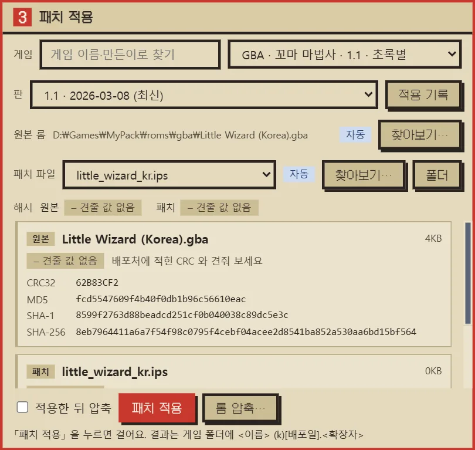
12345- 1게임 고르면 그 폴더의 패치와 원본 롬을 찾아 채워요.
- 2원본 롬 게임 폴더의 원본/ 에서 골라요.
- 3패치 파일 xdelta · bps · ips, 압축 안의 패치도.
- 4적용한 뒤 압축 CD 기종 chd · GC/Wii rvz · 카트리지 zip · 3DS cia.
- 5패치 적용 원본은 두고 「원본 이름 (k)[배포일]」 롬을 새로 만들어요.
- 앱이 고른 원본 · 패치에는 「자동」 배지가 붙어요. 「찾아보기…」 로 바꿀 수 있고, zip · 7z 를 고르면 안의 롬을 풀어 걸어요.
- 「해시」 는 원본이 패치가 바라는 롬인지 보여 줘요 — ✓ 맞아요 · ✗ 틀려요 · ? 미심쩍어요 · – 볼 것이 없어요. 패치 안의 값과 같이 받은 설명 글(checksums.txt · readme 등)의 해시로 견줘요.
- xdelta · bps · ips · ups 를 걸어요. CD 이미지가 오류 정정 값만 달라 안 걸리면 그 값을 다시 계산한 사본에 한 번 더 걸어요.
- 앱 밖에서 직접 패치했으면 「적용 기록」 으로 「보유」 칸에 적어 둬요.
원본은 손대지 않고 복사본에 걸어요. 그런데 다 걸면 이번 「받는 중」 으로 받은 패치 파일은 영구히 지워요(dlc 가 든 것 등은 남겨요).
「적용한 뒤 압축」 을 켜면 압축 전 결과 파일은 휴지통으로 가요. 받을 곳이 나스면 휴지통이 없어 영구 삭제예요.
그 밖에
- 「직접 더하기…」: 목록에 없는 패치를 직접 더해요. 「목록 받기」 를 해도 남아요. 줄 ⋯ 메뉴의 「판 더하기…」 · 「고치기…」 로 줄을 손봐요.
- 「폴더 점검…」: 아무 롬 폴더나 골라 이름 끝의
(k)[배포일]로 가진 판이 최신인지 봐요. - 「팩에 넣기…」: 받아 둔 한글 롬 가운데 팩에 없는 것만 팩 기종 폴더로 복사해요. 팩 파일은 덮지도 지우지도 않아요. 넣은 뒤 「목록 갱신」 을 해야 팩 목록에 보여요.
- 줄 제목 앞 재생 단추: 그 게임을 유튜브에서 찾아 앱 안에서 틀어 봐요. 굴려서 맨 아래까지 가면 더 받아요.
- 디스크 기종은 「패치 적용」 탭에 「디스크 풀기」 · 「m3u 로 묶기」 · 「롬 압축…」 같은 도구가 나와요.
기기로 보내기
팩을 RetroBat · Batocera · ROCKNIX · Pegasus · ES-DE 가 읽는 모양으로 내보내요. 머리줄 「내보내기…」 를 눌러요.
내보내기
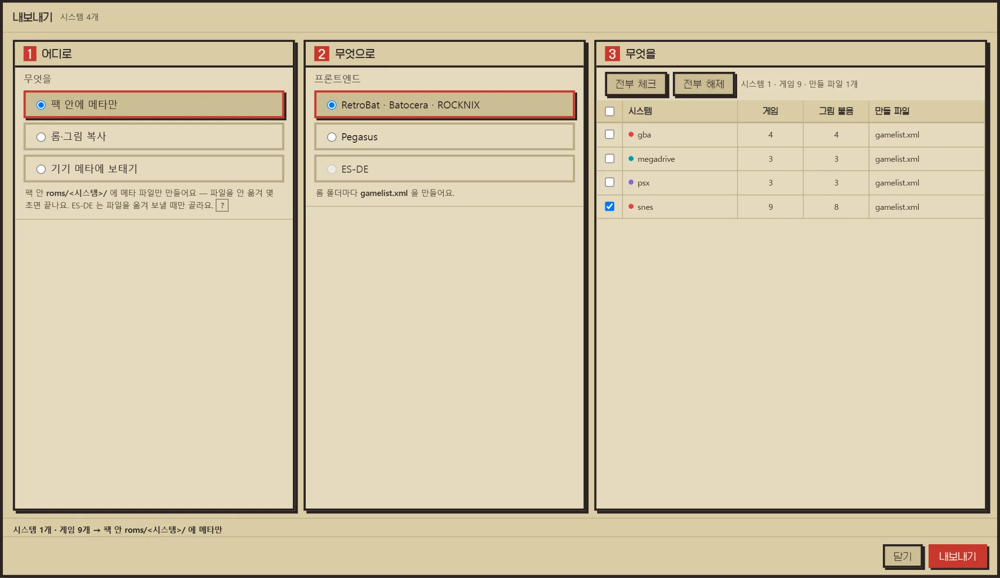
1234- 1어디로 팩 안에 메타만 · 롬 · 그림 복사 · 기기 메타에 보태기.
- 2무엇으로 RetroBat · Batocera · ROCKNIX / Pegasus / ES-DE.
- 3무엇을 보낼 기종을 체크해요.
- 4내보내기
- 팩 안에 메타만
- 팩
roms/<기종>/에 목록 파일만 만들어요. 몇 초면 끝나요. 있던 목록 파일은 덮어써요. - 롬·그림 복사
- 롬 · 그림까지 폴더 · 커스텀 리눅스(SFTP) · 안드로이드(USB)로 보내요(아래).
- 기기 메타에 보태기
- 기기에 이미 있는 목록에 제목 · 그림 자리만 보태요(아래).
프론트엔드는 셋이에요. RetroBat · Batocera · ROCKNIX 는 gamelist.xml, Pegasus 는 metadata.pegasus.txt 를 만들어요. ES-DE 는 메타 · 그림을 ES-DE/ 아래로, 롬을 ROMs/ 로 보내고 폴더 이름을 ES-DE 이름으로 바꿔요(예: 3ds → n3ds).
롬·그림 복사
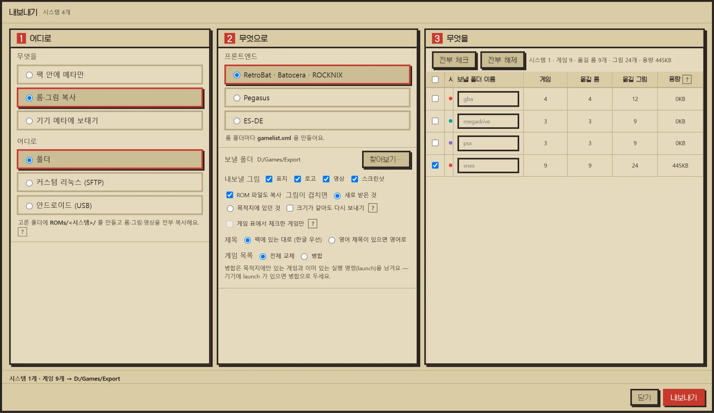
1234- 1어디로 폴더 · 커스텀 리눅스(SFTP) · 안드로이드(USB).
- 2보낼 폴더 ROMs/<시스템>/ 이 생겨요.
- 3보낼 것 그림 종류 · ROM 복사 · 겹칠 때 · 제목 · 게임 목록 교체/병합.
- 4기종 · 용량 보낼 기종을 체크하면 옮길 롬 · 그림 · 크기가 보여요.
- 이름 · 크기가 같은 파일은 건너뛰어요. 멈췄다가 다시 눌러도 이어서 가요. 내용만 바뀐 롬도 보내려면 「크기가 같아도 다시 보내기」 를 켜요.
- 「게임 표에서 체크한 게임만」 을 켜면 목록에서 체크한 게임만 보내요(게임 목록은 늘 「병합」).
- 「제목」 은 한글 우선 또는 영어 제목 우선으로 골라요.
- Pegasus 의 실행 명령(launch)은 안드로이드 RetroArch 기준이에요. PC 용 Pegasus 로 보낼 때는 「고급」 에서 꺼요.
기기 메타에 보태기
기기(USB)를 훑어 기기 롬과 팩 게임을 이은 뒤, 기기 목록에 빈 제목 · 설명 · 그림 자리를 보태요. 기기에 있던 실행 명령 · 제목 · 그림 경로는 건드리지 않고, 롬 · 그림 파일도 옮기지 않아요.
- 「PC 에 저장」 은 결과를 폴더에 두기만 해요. 「기기에 넣기」 는 확인 창을 거쳐 기기 파일을 바로 바꾸고, 원본은 저장 폴더 아래
_backup에 챙겨요. - 「이름이 비슷한 것도 잇기」 를 켜면 파일 이름이 조금 다른 것도 이어요. 이은 것은 표에 따로 보여요.
기기 설정 옮기기
머리줄 「기기 설정…」 은 안드로이드 기기의 Pegasus · 에뮬레이터 설정 폴더를 팩 안 devices/ 에 저장해 두고 새 기기에 그대로 넣어요. 롬 · 그림은 이 창이 아니라 「내보내기」 가 보내요.
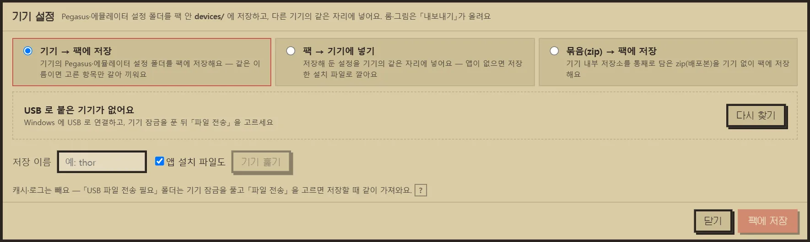
1234- 1방향 기기 → 팩에 저장 · 팩 → 기기에 넣기 · 묶음(zip) → 팩에 저장.
- 2기기 USB 로 붙은 기기예요. 없으면 「다시 찾기」.
- 3기기 훑기 설정 폴더를 찾아 표에 보여요(캐시 · 로그는 빼요).
- 4팩에 저장 팩 안 devices/<이름>/ 에 저장해요.
- 기기가 안 보이면 USB 를 꽂고 기기 잠금을 푼 뒤 「파일 전송」 을 골라 「다시 찾기」 를 눌러요.
- 캐시 · 로그는 빼고 저장해요. 같은 이름으로 다시 저장하면 고른 항목만 갈아끼워요.
- 「묶음(zip) → 팩에 저장」 은 기기 없이 내부 저장소를 통째로 담은 zip 에서 저장해요.
devices/_backup/ 에 챙겨요.설정·업데이트
머리줄 오른쪽 끝 톱니바퀴를 눌러요. 왼쪽 탭마다 따로 저장해요. 키와 비밀번호는 이 PC 안에서 Windows 가 주는 열쇠로 잠가 보관해요.
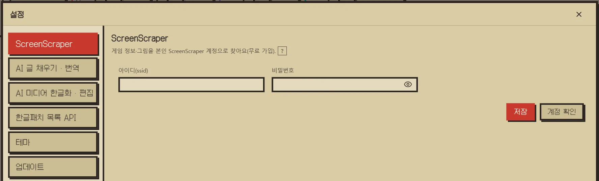
123- 1탭 ScreenScraper · AI 글 · AI 미디어 · 한글패치 목록 API · 테마 · 업데이트.
- 2계정 본인 ScreenScraper 아이디 · 비밀번호(무료 가입).
- 3저장 · 계정 확인 탭마다 따로 저장해요.
- ScreenScraper
- 본인 계정. 「계정 확인」 으로 오늘 남은 조회 수를 봐요.
- AI 글 채우기 · 번역
- Gemini · ChatGPT · Claude 중에 고르고 그 키를 넣어요. 「키 확인 · 모델 받기」 로 모델 목록을 받아요. 구독과 API 결제는 따로예요.
- AI 미디어 한글화 · 편집
- 그림 한글화와 AI 누끼 따기가 쓸 서비스(Gemini · OpenAI)와 이미지 모델. OpenAI 키는 ChatGPT 키와 같은 자리예요. 저장만으로는 아무 요청도 보내지 않아요.
- 한글패치 목록 API
- 목록 받기 키. 받은 목록은 1시간 동안 다시 묻지 않아요. 30일 동안 안 쓴 키는 사이트가 폐기해요.
- 테마
- 크림 · 검정. 고르면 바로 바뀌어요.
- 업데이트
- 「켤 때 새 판이 있는지 확인」 을 켜 두면 켤 때마다 봐요. 「지금 확인」 으로 바로 볼 수도 있어요.
새 판이 있으면 「새 판이 나왔어요」 창이 떠요. 「바뀐 점 보기」 로 이 사이트의 업데이트 내역을 열 수 있어요.
「확인」 을 누르면 받아서 exe 를 갈아끼우고 다시 켜요. 옛 exe 는 같은 폴더에 .old 로 남았다가 다음에 켤 때 지워져요. 「취소」 는 이번만 넘기고 다음에 켤 때 또 물어요.
알아 둘 것
되돌리기 어려운 것
대부분의 지우기는 팩 휴지통(_trash/)이나 PC 휴지통으로 가서 되살릴 수 있어요. 아래는 그렇지 않은 것들이에요.
| 어디서 | 무엇을 누르면 | 무엇이 사라지나 |
|---|---|---|
| 휴지통 | 「비우기」 · 「영구 삭제」 | 그 게임의 롬 · 그림 · 제목 |
| 게임 목록 | 「선택 합치기」 | 합친 것을 푸는 기능이 없어요 |
| 롬 폴더 다시 읽기 · 목록 갱신 | 「없어진 롬만 빼기」 · 「목록 갱신」 | 파일이 없어진 게임에 적어 둔 제목 · 설명 |
| 그림 편집 | 「적용」 | 같은 자리에 있던 그림 |
| AI 미디어 한글화 | 「선택한 결과 일괄 적용…」 | 바꾼 자리의 옛 그림 |
| 한글패치 받기 | 「원본에 넣기」 | 받은 zip · 7z(풀어 넣은 뒤) |
| 한글패치 적용 | 「패치 적용」 이 끝나면 | 이번 「받는 중」 으로 받은 패치 파일 |
| 한글패치 (나스 자리) | ⋯ 메뉴 「영구히 지우기」 · 압축 | 나스에는 휴지통이 없어요 |
| 내보내기 | 게임 목록 「전체 교체」 | 기기 목록에 있던 실행 명령(launch) |
계정 · 키 · 요금
- ScreenScraper 는 무료 계정이고, 계정마다 하루 조회 수가 정해져 있어요.
- AI 기능(글 채우기 · 번역 · 그림 한글화 · 누끼 따기)은 본인 키로 각 서비스에 요청해요. 요금은 그 서비스에 나가고, ChatGPT · Gemini 구독과는 따로예요.
- 키는 이 PC 안에만 보관하고 그 서비스에 요청할 때만 써요. 이 사이트에는 모이지 않아요.
들어 있지 않은 것
Create Pack 에는 게임 파일 · BIOS · 열쇠가 들어 있지 않아요. 직접 가진 파일을 정리하는 도구예요. 한글패치도 목록과 정리만 도와요 — 패치는 배포처에서 직접 받아요.